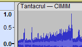
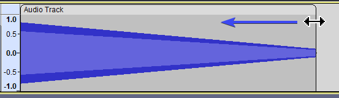

New features in this release
Contents
There is an overview video for 3.1 available on YouTube:
- Clip-handles
- Smart Clips
- Playback Looping
- Context Menus
- New defaults
- Bug fixes
- Updating from Audacity 2.x to 3.x
Clip-handles

The old Time Shift Tool  has been replaced by Clip handles. Clip handles are the rounded corners above the clip which feature the clip title. You can move clips around by simply clicking and dragging the clip handle, and you can rename clips by double-clicking the clip handle.
has been replaced by Clip handles. Clip handles are the rounded corners above the clip which feature the clip title. You can move clips around by simply clicking and dragging the clip handle, and you can rename clips by double-clicking the clip handle.
Label tracks don't feature clip handles, but they can be moved around just the same: Simply click on the label (the bar for region labels, the circle for point labels) and drag them to their new place.
Smart clips

Audacity now can trim clips non-destructively by dragging the upper edge of a clip. This means that you can make clips shorter, then do some edits and then decide it should be longer anyway - the data will still be there. Copy-pasting the trimmed clip also will have that info available!
Playback Looping
Audacity now features a new playback looping button. Enabling it will mark the current selection as a looping region, in which the playback will loop. You then can edit and select independently of the looping region. This feature replaces the previous Shift+Play behavior.
When looping is enabled, you can press Shift+Play to only play the looping region once.
Context Menus
Since it's conception in 2000, Audacity had cross-platform support of both Windows, macOS and Linux as it's goal. But macOS at the time didn't have a right-click, so to not hide features from mac users, Audacity didn't have any right-click context menus. The situation has changed since then, and there no longer is anything hindering right-click context menus, so they now have been added to a few places, such as in the waveform of clips and the empty (dark grey) space outside of tracks, providing relevant options right there.
New defaults
- In the preferences, is now disabled by default. This makes multi-track editing easier (even if you're not using Sync Lock). You may now see an error saying that there isn't enough space when pasting clips in-between other clips though, so if that happens to you too frequently, you may want to turn it back on.
- The spectrogram defaults have been changed: scale type to Mel (was Linear), top of scale to 20000 Hz (was 8000 Hz), window size to 2048 (was 1024), and zero padding to 2 (was 1).
Bug fixes
Since Audacity 3.0.3, there have been two hot-fix releases (3.0.4 and 3.0.5), both fixing a bug each which could lead to data corruption. Thanks to the automatic updates introduced in 3.0.3, we actually could make these hotfixes and be reasonably certain that they'd actually reach users and potentially avert data loss.
In addition, we closed some 200 issues on Github since 3.0.3, including 52 bugs. Some more details can be found in the release notes.
Updating from Audacity 2.x to Audacity 3.x
With the release of Audacity 3.0.0 the project file structure of Audacity was changed significantly with the entire project contained in a single unified database file.
If you have already updated to any 3.x version you should already be aware of this.
But if you are updating from any earlier 2.x Audacity version please read Updating from Audacity 2.x to Audacity 3.x.
Audacity 3.x can usually open AUP files created in older 2.x.x versions of Audacity , but saving the project in 3.x will prevent it opening again in Audacity versions prior to 3.0.0.
- Note that this will leave behind the old AUP file and its associated _data folder which you will probably want to delete to recover disk space.
- Audacity version 3.x should be able to open projects from Audacity 1.1 onwards - but not from 1.0
Links
> Audacity Release Notes 3.1 - detailed release notes for this release of Audacity